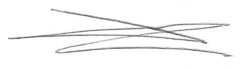

Our philosophy is a simple one: effective teaching must involve active and experiential learning. Engaging students with "outside of the box" teaching methods encourages creativity, fuels passion, and complements traditional didactic teaching methods. Thus, our goal is to enhance the user's knowledge of Family Medicine topics in a new and compelling way.
We believe that family physicians and allied health professionals strengthen our local communities and can have an impact on those internationally as well. We also have a responsibility to assist those less fortunate and in need. Therefore, the Family Medicine Study Guide was created as a non-profit project. 100% of the project's revenue will be used to ensure the sustainability of the app and be donated to various charities around the world.
Thank you for your support in this endeavour, and best of luck with your studies and continued growth in the field of Family Medicine.

Dr Daniel Léger, CCFP, MD, BSc
Assistant Professor of Family Medicine
Schulich School of Medicine & Dentistry
Western University
Dr. Michael Craig
Dr. Jessica Howard
Dr. Kyle Tabor
Dr. Andrew Welton
Dr. Jessica Siu
Dr. Alex Jiang
Dr. Craig Kung
Dr. Branden Deschambault
Dr. Laura Clademenos
Dr. Aric Sudicky
Dr. Kate Partridge
Tiffany Nicholson
Dr. Roland Grad
Dr. Clarissa Burke, Dr. Jay Taylor, Dr. Christina Cookson, Dr. Elena Bykova, Dr. Janet Zhao, Dr. Jeffrey Price, Dr. Alex Jiang, Dr. Branden Deschambault, Dr. Craig Kung, Dr. Laura Clademenos, Dr. Lauren Gurland, Dr. Nisa Arora, Dr. Trevor Harrison, Dr. Matthew Weir, Dr. John Howard, Dr. Charlotte McDonald, Dr. Cyrus Hsia